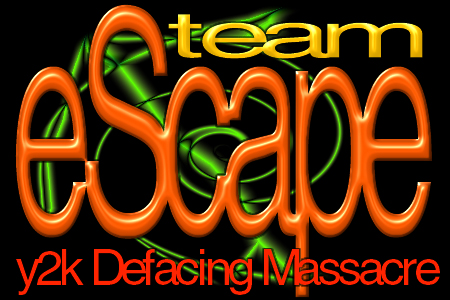

Owned by Team eScape

"Expecting life to treat you fairly because you are a good person is like expecting the bull to not charge at you because you are a vegitarian"
Well people, you were hacked. Sorry if you're an innocent half-life fan simply visiting this site, but I felt the deep, unhuman urge to hack this. And it was fun enough thank you! You can still view the original site by clicking on this link. I wont bitch on this site, I bitched enough about gaming on the www.starcraft.co.za hack, so I won't bitch again. Honestly if I'm to bitch on all the sites I'll hack today, I'll never get it over with ;)
Your the second victim to get hacked today, but a lot more are coming. As it says in the picture, "Team eScape y2k Defacing Massacre", so by tonight a lot more sites will be defaced by us :)
Peace out!
-Team eScape
Greets out to:
Clans:
-Everyone in SoaR and CoD :)
nb: No files have been deleted or overwritten. The original index.htm file has been renamed for index11.htm. Our entry was spoofed, the logs are fake, but I doubt you would want to try to stop us anyways. We're just telling you you have weak security :)